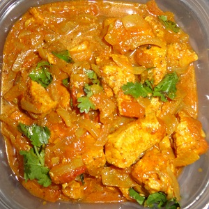

My Jamaican Recipes
Curry Chicken
Curry chicken is a popular dish that combines chicken pieces with a flavorful sauce made from various spices, herbs, and other ingredients.
Ingredients
- 1 pound boneless, skinless chicken breasts, cut into 1-inch cubes
- 2 tablespoons vegetable oil
- 1 onion, chopped
- 2 cloves garlic, minced
- 1 tablespoon grated fresh ginger
- 1 tablespoon curry powder
- 1 teaspoon ground cumin
- 1 teaspoon ground coriander
- 1/4 teaspoon cayenne pepper
- 1/4 teaspoon salt
- 1 can (14.5 ounces) diced tomatoes, undrained
- 1 can (13.5 ounces) unsweetened coconut milk
- 1/2 cup chopped fresh cilantro
- Cooked rice, for serving
Instructions
- In a large skillet, heat the oil over medium heat. Add the chicken and cook until browned on all sides, about 5 minutes. Remove the chicken from the skillet and set aside.
- In the same skillet, add the onion, garlic, and ginger. Cook until the onion is softened, about 5 minutes.
- Add the curry powder, cumin, coriander, cayenne, and salt. Cook for 1 minute, stirring constantly.
- Stir in the diced tomatoes and coconut milk. Bring to a simmer.
- Return the chicken to the skillet and stir to combine. Simmer for 15-20 minutes, until the chicken is cooked through and the sauce has thickened slightly.
- Stir in the cilantro.
- Serve the chicken curry over cooked rice.